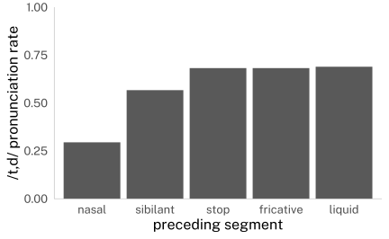
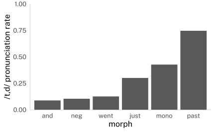
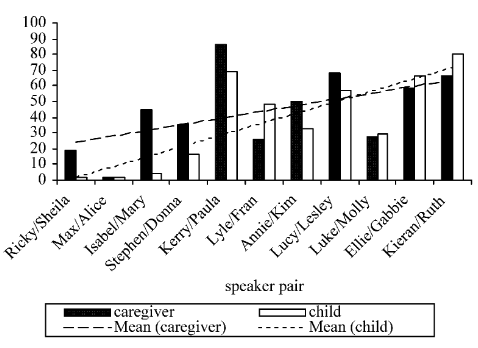

| term | estimate |
|---|---|
| (Intercept) | 1.38 |
| obstruent | -1.44 |
| plus1 | 0.91 |
| plus2 | -0.88 |
| voice | -0.52 |
| V | -0.44 |
Phonological Variation
Dr. Josef Fruehwald
Rules are rules?
Voiceless stops aspirate word initially
![#import "@preview/phonokit:0.8.0": *
#phonokit-init(font: "Noto Sans")
#set text(font: "Noto Sans", size: 24pt)
#feat(
[$-$voice],
[$-$cont]
) #sym.arrow #feat("SG") / \# #blank()](../../../course-materials/lecture-notes/22_variation/./assets/typst-render/index/typst-block-1.svg)
Optionality
Sometimes, rules apply variably.
“west side”
wɛst sɑid ~ wɛs∅ sɑid
Optionality
Sometimes /t, d/ gets deleted in a word final cluster.
![#import "@preview/phonokit:0.8.0": *
#phonokit-init(font: "Noto Sans")
#set text(font: "Noto Sans", size: 24pt)
#feat(
smallcaps[Cor],
[$-$cont],
[$-$son]
) #sym.arrow $chevron.l emptyset chevr](../../../course-materials/lecture-notes/22_variation/./assets/typst-render/index/typst-block-2.svg)
Optionality?
![#import "@preview/phonokit:0.8.0": *
#phonokit-init(font: "Noto Sans")
#set text(font: "Noto Sans", size: 24pt)
#feat(
smallcaps[Cor],
[$-$cont],
[$-$son]
) #sym.arrow $chevron.l emptyset chevr](../../../course-materials/lecture-notes/22_variation/./assets/typst-render/index/typst-block-3.svg)
How often?
In all contexts?
Optionality

Optionality?

Optionality

Optionality?
- These patterns seem more structured than just “sometimes it happens.”
- Perhaps we want to account for this kind of structured variation in our phonological theories.
Learned Probabilities?
We have to learn the constraint *tl.
But for phonological variability, maybe some things are just naturally harder to articulate?
Learned Probabilities
In Buckie, in the far North West of mainland Scotland, there is variation in how words like “down” are said.
| Formal | Informal |
|---|---|
| [dʌʊn] | [dʉn] |
Learned Probabilities
Children match their specific caregiver’s rate of [dʉn] usage.

Smith et al. (2007)
Learned Probabilities
In Chilean Spanish, /s/ is realized as [s], or [h] or [\(\emptyset\)]
el lapiz
| [lapis] | [lapih] | [lapi] |
Learned Probabilities
Children match their specific caretaker’s rate of [s] deletion.

Miller (2013)
Variable Rules
William Labov pioneered the use of “Variable Rules”
A lot like any other phonological rewrite rule.
Instead of feature values like \(+\) or \(-\) , they have weights that describe the probability of the rule applying.
Variable Rules
Variable rule modified from Labov et al. (1968)
Variable Rules
Constraints
How can constraints give rise to variation?
- *Ct
-
Don’t have a consonant+[td] sequence
- Max
-
Don’t delete anything
- Max-Pre-V
-
Don’t delete anything before a vowel
- Max-Final
-
Don’t delete anything before a pause
Constraints
Instead of a ranking, constraints have weights.
| *Ct | Max | Max-Pre-V | Max-Pre-Final |
|---|---|---|---|
| 140 | 59 | 80 | 79 |
Coetzee and Pater (2011)
Constraints
References
Coetzee, Andries W., and Joe Pater. 2011. “The Place of Variation in Phonological Theory.” In The Handbook of Phonological Theory, Second, edited by Goldsmith, Riggle, and Yu. Wiley-Blackwell.
Labov, William, Paul Cohen, Clarence Robins, and John Lewis. 1968. The Study of the Non-Standard English of Negro and Puerto Rican Speakers in New York City: Phonological and Grammatical Analysis: Report on Co-Operative Research Project 3288. Vol. 1. Columbia Universiy.
Miller, Karen. 2013. “Acquisition of Variable Rules: /s/-Lenition in the Speech of Chilean Spanish-Speaking Children and Their Caregivers.” Language Variation and Change 25 (3): 311–40. https://doi.org/10.1017/S095439451300015X.
Smith, Jennifer, Mercedes Durham, and Liane Fortune. 2007. “‘Mam, My Trousers Is Fa’in Doon!’: Community, Caregiver, and Child in the Acquisition of Variation in a Scottish Dialect.” Language Variation and Change 19 (01): 63–99. https://doi.org/10.1017/S0954394507070044.